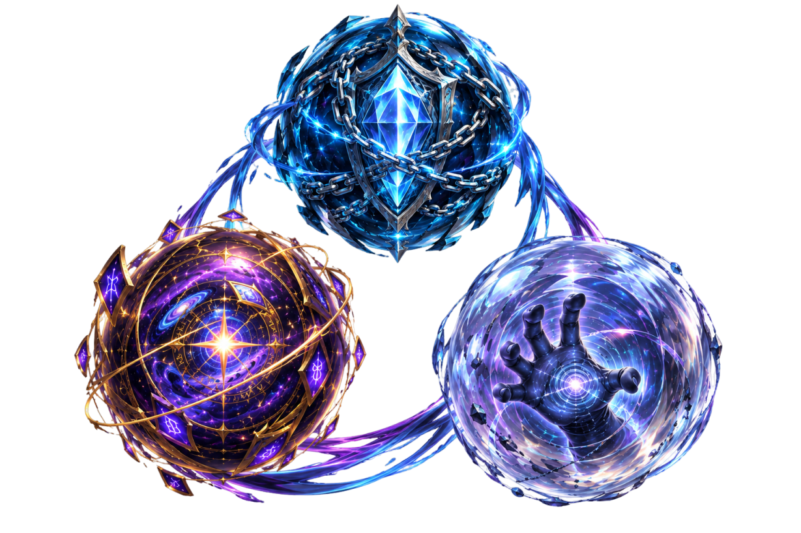
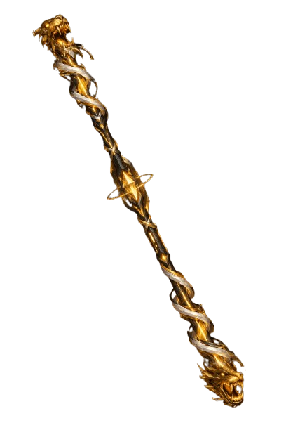

Bastão Wu-Jayyyyyyyyy
Bastão de Techno-Fusão Vibracional


- NVP: Semi Deus
- Idade: 3 Eras
- Atual Portador: Aksunamum
- Origem Pelicular: Yggdrasil
- Afinidade: Membros do Clã Jayrar,Glaurung e os Turgon
- Tendência: Nula(inconsciente)
- NE: 80 mil
- Foco Pelicular: 1º Absorção Anti-Pelicular, 2º Runificação Estelar, 3º Pressão Vibracional;
- Função Ativa: Tanker Dominante 2(Deflexões em geral, Enfraquecer corpos e estruturas em geral, Assistencialismo Energético INFI);
- Propriedade de Forja: PROP 5.0, Canote Externo de Aço Cosmico Misto(Aço Branco com revestimento titanico),Fibras Externas de Kronaza com Fixador Rúnico, Propulsores Ardamax feitos com Carvalho Ancião e nano reator de Rhuriol;
- Nv Velo Ativas: Ativação e manifestação: Pelicular = CON+60% / Anti-Pelicular = seu atual nv de velo marcial + 0.5(nao ultrapassando atemporal nv1);
- Pontos de Forja: 300 PF;;
- VDs Chave: •Indestrutivel a danos de corte,perfuração e contusão pelicular/cinético e psíquico pelicular/vácuo pelicular/Energia Pelicular/desfragmentação pelicular/fusao não technomantica/conversão energetica/•4 Nanonúcleos Ardamax de Auto Reparo Atemporal/Temporal(soberania esp),•Fortitude Estelar(ignora 5 CAC em sua forja e composição e 3 CAC no seu sistema techno,além de lhe compartilhar Fortitude : ignora 3 CAC em corpo,2 em poderes internos e 1 em mente,alma,presença planar,núcleo e akasha);
- NV atual do Artefato Cosmico: Nv3 de 7(necessario ter focos iguais ou similares,além de linhagem sanguinea dos clãs para alcançar o nv maximo)
- Melhorias atuais: Benção dos Altos Turgonis e Revestimento de Cromofúria,ver em VDs
- Valor Pelicular Atual: 13 mil PP